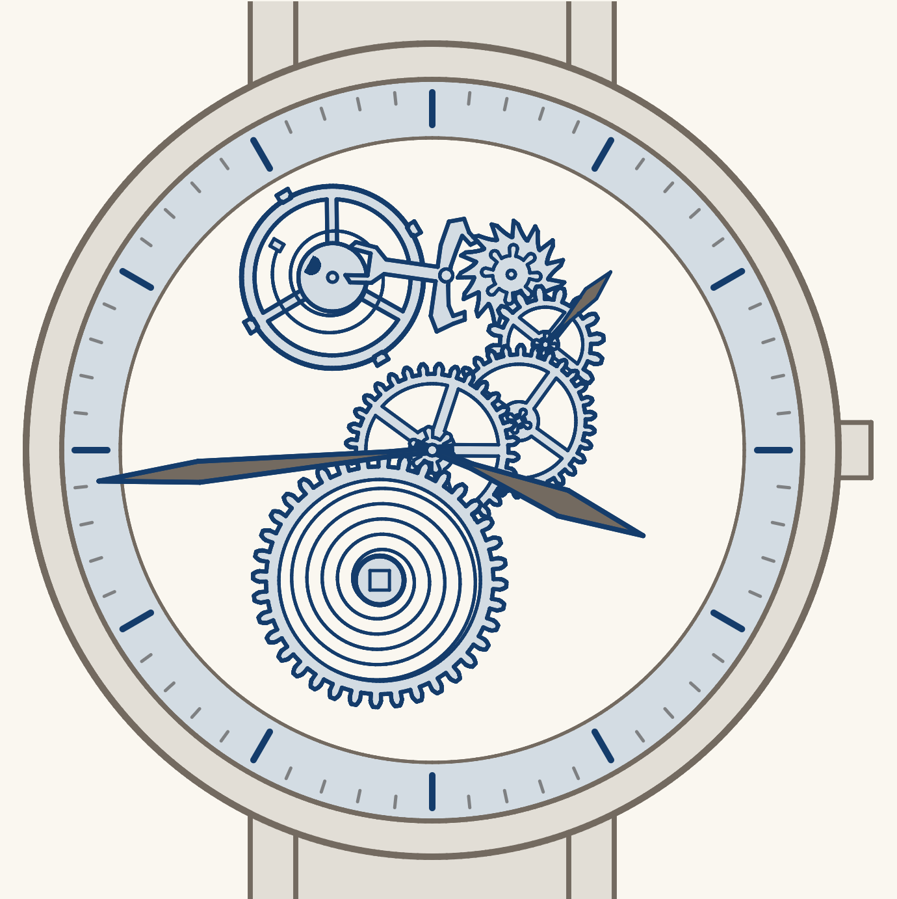

What Everyone Should Know About Mechanical Watches · PART 3
Look Good on Your Wrist

For two centuries, watches were tools, and lives depended on them. They found ships at sea, kept trains from colliding, and told soldiers the time in the dark. They also poisoned the women who painted their dials.
Today, nobody’s life depends on a watch. The phone in your pocket gets its time from atomic clocks. Yet people still wear mechanical watches, and pay more for them than for quartz. Why?